Home / Past papers / MLP Quiz 1 / this paper
IIT M DIPLOMA AN4 EXAM QPD4 29 Oct 2023 - 29 Oct 2023
Elapsed 00:00
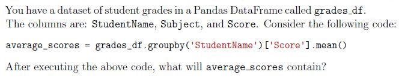
- The highest score for each student.
- A list of subjects sorted by their average scores.
- The average score of each student across all subjects.
- A DataFrame with the scores of all students for each subject.
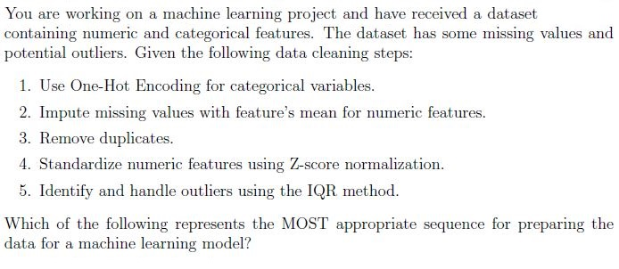
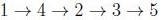
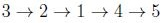
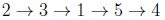
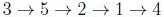
You’re working with a dataset that consists of training data (‘train_data’) and test data (‘test_data’). The dataset contains both numerical and categorical features. You decide to employ a combination of ‘StandardScaler’ (for numerical columns) and ‘OneHotEncoder’ (for categorical columns) from ‘scikit-learn’ using the ‘ColumnTransformer’ utility. Which of the following actions is MOST likely to introduce data leakage or potential modeling issues?
- You utilize ‘fit_transform’ on ‘train_data’ and then ‘transform’ on ‘test_data’using the ‘ColumnTransformer’.
- After observing a new category in the test data that was not present in thetraining data, you set the ‘handle_unknown’ parameter to ’ignore’ in ‘OneHotEncoder’.
- You first apply ‘fit’ on the ‘test_data’ and then ‘transform’ on ‘train_data’ usingthe ‘ColumnTransformer’.
- Before using ‘ColumnTransformer’, you independently apply ‘fit_transform’ to‘train_data’ for both ‘StandardScaler’ and ‘OneHotEncoder’.
You are working on a machine learning project that aims to predict housing prices based on various features of the houses. As the first step, you decide to perform exploratory data analysis and visualize the data to understand its structure and relationships. Which of the following visualization techniques or principles is LEAST likely to provide meaningful insights for this kind of regression problem?
- Plotting a heatmap of the correlation matrix to understand the linearrelationship between the numeric features.
- Using a scatter plot to visualize the relationship between the square footage ofa house and its price.
- Visualizing the distribution of housing prices using a pie chart.
- Creating box plots for housing prices, grouped by the number of bedrooms, todetect outliers and understand the distribution across different categories.
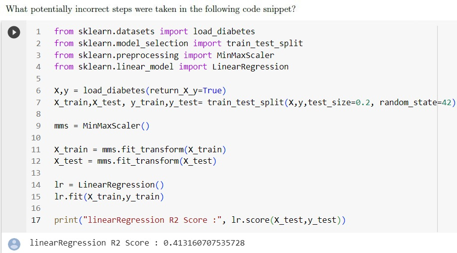
- Important parameter in MinMaxScaler was missing while transforming thedata.
- train_test_split shouldn’t be done while setting random_state parameter.
- X_test was transformed incorrectly.
- All the steps are correct
Imagine you’ve loaded a dataset with 1000 samples into a Pandas DataFrame, and each sample has 30 features. Unfortunately, some samples have missing values for a few features, and you want to remove samples with more than 3 null values present. Please select the method to accomplish this task.?
- drop(how= 27)
- drop(columns=[‘all’])
- dropna(thresh = 27)
- dropna(how=‘any’)
- dropna(thresh=3)
Choose the options with respect to the given statements: Statement1 : To apply various sklearn methods from in series on a column we should use Pipeline. Statement2 : To apply various sklearn methods on various columns in parallel we should use ColumnTransformer.
- Statement 1 False, Statement 2 False
- Statement 1 True, Statement 2 False
- Statement 1 False, Statement 2 True
- Both statements are True
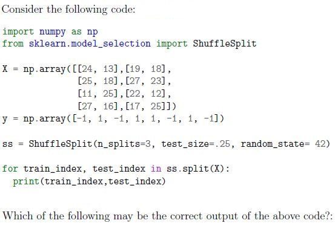
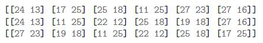
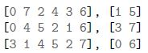
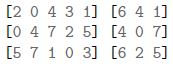
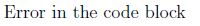
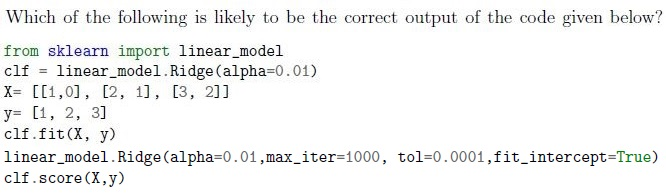
- 5
- 99
- 0.999
- No evaluation metrics is mentioned, hence it will produce error.
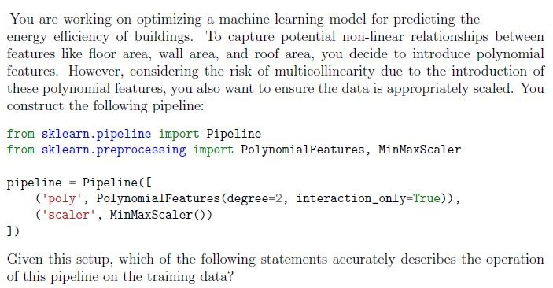
- The pipeline will generate polynomial features (including squared terms) andthen scale these features to a range between 0 and 1.
- The transformed data will consist of the original features, their squares, andinteraction terms, all scaled between 0 and 1.
- The pipeline scales the original features between 0 and 1, then subsequentlygenerates polynomial combinations including both square terms and interaction terms.
- Only interaction terms between features are generated by the pipeline, whichare then scaled between 0 and 1, without including the squared terms of individual features.

- Optimize the model’s complexity by automatically determining the best αthrough cross-validation.
- Reduce overfitting by incorporating 10-fold cross-validation during modelselection.
- Make predictions using an ensemble of 10 different Lasso models trained ondifferent subsets of the data.
- Maximize the number of features retained in the model, ensuring a complexmodel representation.
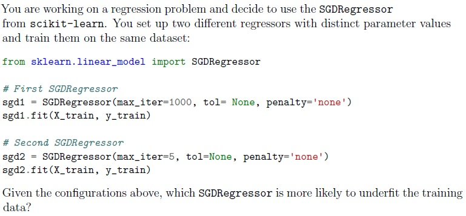
- sgd1
- sgd2
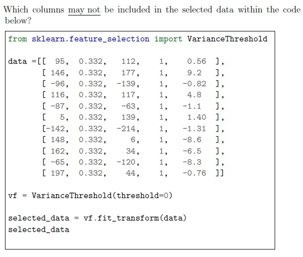
- Column indexed at 0
- Column indexed at 1
- Column indexed at 2
- Column indexed at 3
- Column indexed at 4
- No columns
Which of the following code blocks will correctly take the learning rate as ‘optimal’ ?
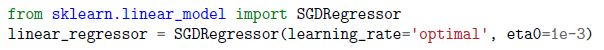
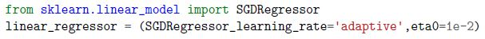
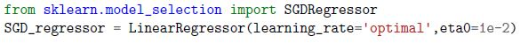
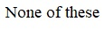
While performing exploratory data analysis (EDA) on a dataset, you come across some columns with a high percentage of missing values. Along with that, a few categorical columns have a large number of unique categories. Which of the following actions would typically be a recommended initial approach during EDA? (Choose multiple correct options.)
- Visualizing the data distribution of columns to understand their characteristics.
- Using dimensionality reduction techniques, like PCA, to handle columns withmany unique categories.
- Visualizing the distribution of missing values across the dataset to ascertainany patterns or systematic missingness.
- Removing columns that have more than 90% missing values without anycontext.
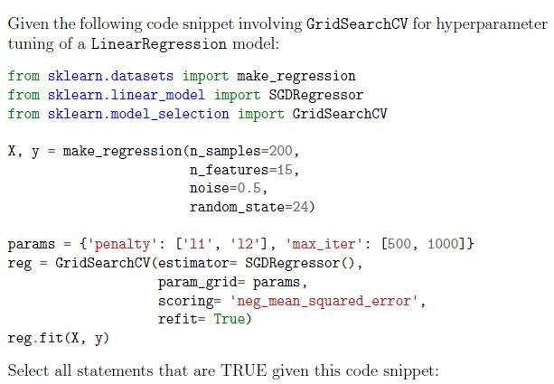
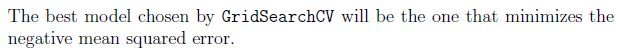
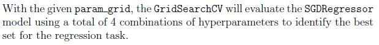
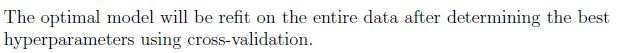
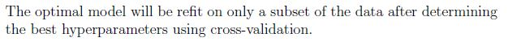
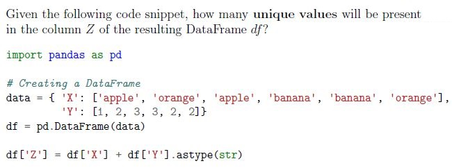
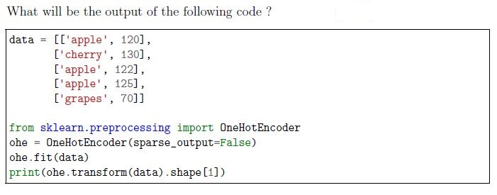
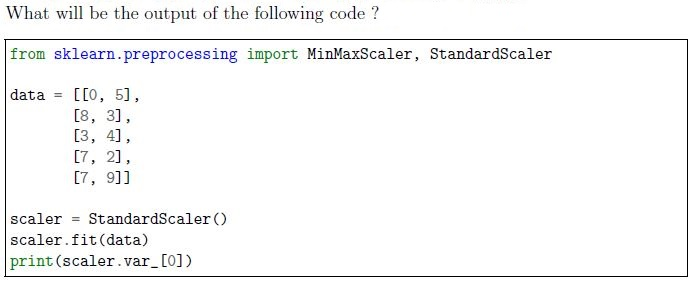
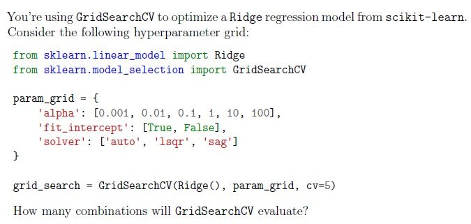
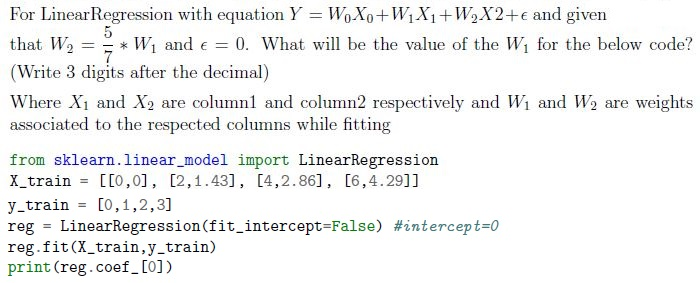
Comprehension passage - the questions below it refer to this
Go through the code snippet given below and answer the given subquestions.
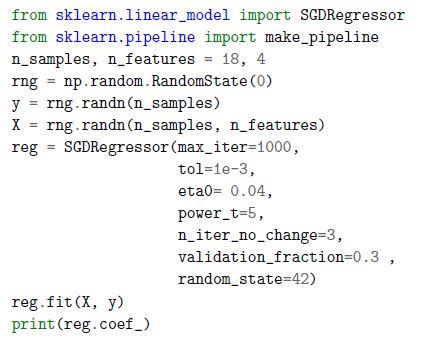
Go through the code snippet given below and answer the given subquestions.Which of the following options will be the output of the given code?
- [-0.02634908 0.01189399 0.0917284 0.08966849]
- array([-0.22622766, -0.00582008, -0.1820344 , 0.03518086, -0.14490955])
- array([-0.22622766, -0.00582008, -0.1820344 ])
- Given code will return an error because the data set is not given.
Which of the following could be the possible output of print(reg.score())?
- -0.528
- 1
- 0.528
- Given code will return an error
Answer key
- Q1 (MCQ, 2 marks): C
- Q2 (MCQ, 2 marks): D
- Q3 (MCQ, 2 marks): C
- Q4 (MCQ, 2 marks): C
- Q5 (MCQ, 2 marks): C
- Q6 (MCQ, 2 marks): C
- Q7 (MCQ, 2 marks): D
- Q8 (MCQ, 2 marks): B
- Q9 (MCQ, 2 marks): C
- Q10 (MCQ, 2 marks): D
- Q11 (MCQ, 2 marks): A
- Q12 (MCQ, 3 marks): B
- Q13 (MSQ, 2 marks): B, D
- Q14 (MSQ, 2 marks): A
- Q15 (MSQ, 3 marks): A, C, D
- Q16 (MSQ, 3 marks): B, C
- Q17 (SA, 2 marks): 5
- Q18 (SA, 2 marks): 8
- Q19 (SA, 2 marks): 9.2
- Q20 (SA, 2 marks): 36
- Q21 (SA, 3 marks): 0.327 to 0.333
- Q22 (MCQ, 2 marks): A
- Q23 (MCQ, 2 marks): D
Concepts this paper tests
Auto-generated summary from the source site. Handy as a checklist; the lessons above explain each idea from scratch.
Summary of Core Topics, Concepts, Principles, and Equations
1. Data Preprocessing and Cleaning
- Handling Missing Values: Techniques like imputation (mean, median, mode) and removal of rows/columns.
- Outlier Detection and Handling: Using methods like the Interquartile Range (IQR).
Data Normalization and Standardization: Techniques like Min-Max Scaling and Z-score normalization.
- Min-Max Scaling:
- Z-score Normalization:
2. Feature Engineering
- One-Hot Encoding: Converting categorical variables into a form that can be provided to machine learning algorithms.
- Polynomial Features: Generating polynomial and interaction features.
- Feature Selection: Techniques like Variance Threshold, Lasso Regression.
3. Machine Learning Models
- Linear Regression:
- Ridge Regression: Linear regression with L2 regularization.
- Lasso Regression: Linear regression with L1 regularization.
- SGDRegressor: Stochastic Gradient Descent for linear regression.
4. Model Evaluation and Hyperparameter Tuning
- Cross-Validation: Techniques like k-fold cross-validation.
- GridSearchCV: Exhaustive search over specified parameter values for a model.
- Scoring Metrics: Mean Squared Error (MSE), R-squared ().
5. Data Visualization
- Scatter Plots: For visualizing relationships between two variables.
- Heatmaps: For visualizing correlation matrices.
- Box Plots: For visualizing distributions and detecting outliers.
6. Pandas and DataFrames
- Grouping and Aggregation: Using
groupbyand aggregation functions likemean. - Handling Missing Data: Using methods like
dropnaandfillna.
7. Scikit-Learn Utilities
- Pipeline: For chaining multiple estimators into one.
- ColumnTransformer: For applying different transformations to different columns.
- ShuffleSplit: For generating random train-test splits.